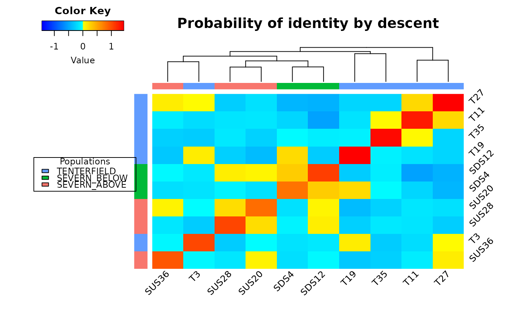

Represents a distance or dissimilarity matrix as a network
Source:R/gl.plot.network.r
gl.plot.network.RdThis script takes a distance matrix generated by dist() and represents the relationship among the specimens as a network diagram. In order to use this script, a decision is required on a threshold for relatedness to be represented as link in the network, and on the layout used to create the diagram.
Usage
gl.plot.network(
D,
x = NULL,
method = "fr",
node.size = 3,
node.label = FALSE,
node.label.size = 0.7,
node.label.color = "black",
alpha = 0.005,
title = "Network based on genetic distance",
verbose = NULL
)Arguments
- D
A distance or dissimilarity matrix generated by dist() or gl.dist() [required].
- x
A genlight object from which the D matrix was generated [default NULL].
- method
One of "fr", "kk" or "drl" [default "fr"].
- node.size
Size of the symbols for the network nodes [default 3].
- node.label
TRUE to display node labels [default FALSE].
- node.label.size
Size of the node labels [default 0.7].
- node.label.color
Color of the text of the node labels [default 'black'].
- alpha
Upper threshold to determine which links between nodes to display [default 0.005].
- title
Title for the plot [default "Network based on genetic distance"].
- verbose
Verbosity: 0, silent or fatal errors; 1, begin and end; 2, progress log; 3, progress and results summary; 5, full report [default 2, unless specified using gl.set.verbosity].
Details
The threshold for relatedness to be represented as a link in the network is specified as a quantile. Those relatedness measures above the quantile are plotted as links, those below the quantile are not. Often you are looking for relatedness outliers in comparison with the overall relatedness among individuals, so a very conservative quantile is used (e.g. 0.004), but ultimately, this decision is made as a matter of trial and error. One way to approach this trial and error is to try to achieve a sparse set of links between unrelated 'background' individuals so that the stronger links are preferentially shown.
There are several layouts from which to choose. The most popular are given as options in this script.
fr – Fruchterman, T.M.J. and Reingold, E.M. (1991). Graph Drawing by Force-directed Placement. Software – Practice and Experience 21:1129-1164.
kk – Kamada, T. and Kawai, S.: An Algorithm for Drawing General Undirected Graphs. Information Processing Letters 31:7-15, 1989.
drl – Martin, S., Brown, W.M., Klavans, R., Boyack, K.W., DrL: Distributed Recursive (Graph) Layout. SAND Reports 2936:1-10, 2008.
Colors of node symbols are those of the rainbow.
Author
Custodian: Arthur Georges – Post to https://groups.google.com/d/forum/dartr
Examples
if ((requireNamespace("rrBLUP", quietly = TRUE)) & (requireNamespace("gplots", quietly = TRUE))) {
test <- gl.subsample.loci(platypus.gl, n = 100)
test <- gl.keep.ind(test,ind.list = indNames(test)[1:10])
D <- gl.grm(test, legendx=0.04)
gl.plot.network(D,test)
}
#> Starting gl.subsample.loci
#> Processing genlight object with SNP data
#> Warning: data include loci that are scored NA across all individuals.
#> Consider filtering using gl <- gl.filter.allna(gl)
#> Warning: Dataset contains monomorphic loci which will be included in the gl.subsample.loci selections
#> Subsampling at random 100 loci from dartR object
#> Completed: gl.subsample.loci
#> Starting gl.keep.ind
#> Processing genlight object with SNP data
#> Deleting all but the listed individuals T27, T35, SDS4, SDS12, SUS20, SUS28, SUS36, T3, T11, T19
#> Warning: Resultant dataset may contain monomorphic loci
#> Locus metrics not recalculated
#> Completed: gl.keep.ind
#> Starting gl.grm
#> Processing genlight object with SNP data
#>

#> Completed: gl.grm
#> Starting gl.plot.network
#> Processing genlight object with SNP data
#>
#> Found more than one class "dist" in cache; using the first, from namespace 'spam'
#> Also defined by ‘BiocGenerics’
 #> Completed: gl.plot.network
#>
#> Completed: gl.plot.network
#>